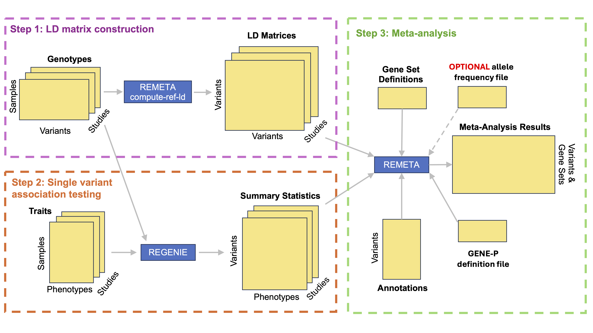
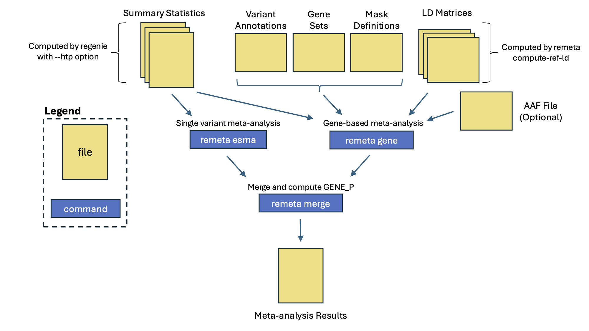

Tutorial
Meta-analysis with remeta requires 3 steps:
- Constructing per cohort reference LD matrices with remeta.
- Computing single variant summary statistics in regenie.
- Running meta-analysis in remeta.
In this example we generate summary statistics for 2 cohorts in regenie,
then meta-analyze them with remeta.
Example data was simulated with plink2 and is available in the example folder in the remeta repository.
For more details on installing and running regenie please visit the regenie documentation.
Main remeta workflow

Construct reference LD matrices
remeta uses per cohort reference LD matrices for gene-based testing.
These matrices only need to be generated once and can be reused across traits.
remeta takes as input plink2 pgen/pvar/psam files.
It outputs a set of three files per chromosome: $PREFIX.remeta.gene.ld, $PREFIX.remeta.buffer.ld $PREFIX.remeta.ld.idx.gz.
The index file $PREFIX.remeta.ld.idx.gz is human readable and contains a list of all the variants in the LD matrix of each gene.
For marginal testing, only the LD between exome variants is required.
A plink2 dataset of exome variants is passed to remeta using the --target-pfile $PLINK2_PREFIX along with the --skip-buffer flag.
LD matrices for marginal testing are typically small and quick to compute.
In addition to exome variants, gene locations are specified in a --gene-list file that have four columns: GENE_SET_NAME CHR GENE_START_POS GENE_END_POS.
See File Formats for more details along with an example file.
remeta can also perform gene-based tests conditional on variants in a buffer region around each gene. Conditional analysis requires the LD between exome variants and the LD of variants in the buffer. Imputed variants can be a good choice for conditional analysis. Any variant in a gene or buffer region can be used for conditional analysis so long as it is stored in the LD matrix.
How remeta stores LD matrices for conditional analysis

remeta has two options for computing the LD of exome variants and imputed variants depending on how they are stored in the input plink2 files.
If exome variants and imputed variants are in the same pgen/pvar/psam file,
then can be passed to remeta using the --target-pfile argument, and exome variants specified with the --target-extract argument.
If exome and imputed variants are stored in separate pgen/pvar/psam files,
then they can be passed to remeta using the --target-pfile and --buffer-pfile arguments.
Buffer regions can be specified in megabases or centimorgan using the --buffer-mb or --buffer-cm arguments respectively.
Note that --buffer-cm requires a genetic map.
See File Formats for more details about the genetic map.
In the example below, we use simulated data for 500 samples and 2000 variants from 2 cohorts.
Genetic data was simulated using the --dummy flag in plink2.
The files example.${cohort}.step2.{pgen, pvar, psam} are the simulated genotypes.
A subset of simulated genotypes was chosen to represent exome variants, specified in the example/example.${cohort}.step2.exome variant list.
Here step 2 refers to the files used when running regenie step 2.
for cohort in cohort1 cohort2; do
for chr in 1 2; do
./remeta compute-ref-ld \
--target-pfile example/example.${cohort}.step2 \
--target-extract example/example.${cohort}.step2.exome \
--gene-list example/example.genelist \
--chr ${chr} \
--out example.${cohort}.chr${chr} \
--threads `nproc` \
--buffer-mb 1
done
done
Generate summary statistics
Association statistics are computed in regenie in a two step framework. regenie step 1 fits a whole genome regression model on a subset of variants to account for relatedness, genetic ancestry, and polygenicity. When preparing summary statistics for remeta, these will typically be a subset of common imputed variants. regenie step 2 performs association testing across all variants using the output of step 1. The output of step 2 is passed to remeta for meta-analysis.
regenie step 1
For this example we simulated 500 samples and 1000 variants with plink2 to represent a subset of variants used in step 1.
These files are: example/example.${cohort}.step1.{pgen,pvar,psam}.
This step outputs the files ${cohort}.step1_1.loco and ${cohort}.step1_pred.list used by regenie step 2.
for cohort in cohort1 cohort2; do
regenie \
--step 1 \
--pgen example/example.${cohort}.step1 \
--phenoFile example/example.${cohort}.pheno.bt.tsv \
--phenoCol Y \
--bsize 100 \
--bt --lowmem \
--lowmem-prefix tmp_rg \
--out ${cohort}.step1
done
regenie step 2
In this step we use two sets of plink2 files, example/example.${cohort}.step2.{pgen,pvar,psam}, to perform association testing.
These are the same files used to generate the reference LD matrices.
Note that the --htp $COHORT_NAME options and --minMAC 1 options should be used during step 2.
The first option outputs a summary statistics file in htp format.
This format has additional meta-data required by remeta.
The second option ensures all polymorphic variants are available for gene-based tests.
for cohort in cohort1 cohort2; do
regenie \
--step 2 \
--pgen example/example.${cohort}.step2 \
--phenoFile example/example.${cohort}.pheno.bt.tsv \
--phenoCol Y \
--bt \
--firth --approx \
--pred ${cohort}.step1_pred.list \
--htp ${cohort} \
--bsize 200 \
--minMAC 1 \
--out ${cohort}.step2
done
For good performance in remeta we recommended compressing and indexing the output HTP files with bgzip and tabix:
for cohort in cohort1 cohort2; do
bgzip ${cohort}.step2_Y.regenie
tabix -S1 -s2 -b3 -e3 ${cohort}.step2_Y.regenie.gz
done
Meta-analysis with remeta

Meta-analysis with remeta has 3 steps:
- Run single-variant meta-analysis.
- Run gene-based meta-analysis across chromosomes.
- Merge files and compute GENE_P.
Run single-variant meta-analysis
remeta performs meta-analysis of single variants using effect size meta-analysis.
In this example, the two htp files generated by regenie as passed to the --htp argument,
and cohort names passed to the --cohort argument.
remeta outputs an htp file called example.esma.remeta.gz.
./remeta esma \
--htp cohort1.step2_Y.regenie.gz cohort2.step2_Y.regenie.gz \
--cohorts cohort1 cohort2 \
--trait-name Y \
--trait-type bt \
--out example
Run gene-based meta-analysis
Gene-based tests in remeta are defined using the same annotation files as regenie.
A --set-list file defines gene sets, an --anno-file defines variant annotations, and a --mask-def file defines groups of annotations in a mask.
See File Formats for more information.
remeta provides a small utility to index bgzipped annotation files. Indexing annotations can help improve performance for large-scale analyses. This can be achieved in two commands.
bgzip example/example.annotations
./remeta index-anno --file example/example.annotations.gz
1:55039839:T:C PCSK9 LoF 1 55039839
1:55039842:G:A PCSK9 missense 1 55039842
.
When running gene-based meta-analysis, exome variants should be specified using --extract argument to avoid including imputed variants in gene-based tests.
Alternatively, input htp files with the SOURCE info field can be used to identify variants to include in tests.
For example, if exome variants have the info field SOURCE=EXOME, then you can pass the --sources EXOME flag to remeta to extract them.
The output of this step are two files in htp format: example.chr{1, 2}.gene.remeta.gz.
for chr in 1 2; do
./remeta gene \
--htp cohort1.step2_Y.regenie.gz cohort2.step2_Y.regenie.gz \
--ld-prefix example.cohort1.chr${chr} example.cohort2.chr${chr} \
--cohorts cohort1 cohort2 \
--extract example/example.exome \
--chr ${chr} \
--set-list example/example.setlist \
--anno-file example/example.annotations.gz \
--mask-def example/example.masks \
--trait-name Y \
--trait-type bt \
--burden-aaf-bins 0.9 0.99 \
--acatv-max-aaf 0.99 \
--skato-max-aaf 0.99 \
--out example.chr${chr}
done
Conditional analysis
Conditional analysis is performed with the --condition-list and --condition-htp arguments.
--condition-list takes a file with a list of variant IDs to condition on.
--condition-htp contains the summary statistics of the variants to be conditioned on,
which may be the same files passed to --htp.
Any variant in a gene or buffer region can be used for conditional analysis.
for chr in 1 2; do
./remeta gene \
--htp cohort1.step2_Y.regenie.gz cohort2.step2_Y.regenie.gz \
--condition-list example/example.condition_list \
--condition-htp cohort1.step2_Y.regenie.gz cohort2.step2_Y.regenie.gz \
--ld-prefix example.cohort1.chr${chr} example.cohort2.chr${chr} \
--cohorts cohort1 cohort2 \
--extract example/example.exome \
--chr ${chr} \
--set-list example/example.setlist \
--anno-file example/example.annotations \
--mask-def example/example.masks \
--trait-name Y \
--trait-type bt \
--burden-aaf-bins 0.9 0.99 \
--acatv-max-aaf 0.99 \
--skato-max-aaf 0.99 \
--out example.conditional.chr${chr}
done
Merge and compute GENE_P
Per chromosome files and additional meta-analysis results can be merged together. Additionally p-values per gene are computed by combining p-values across tests with ACAT.
./remeta merge \
--htp example.chr1.gene.remeta.gz example.chr2.gene.remeta.gz example.esma.remeta.gz \
--genep-def example/example.genepdef \
--out example